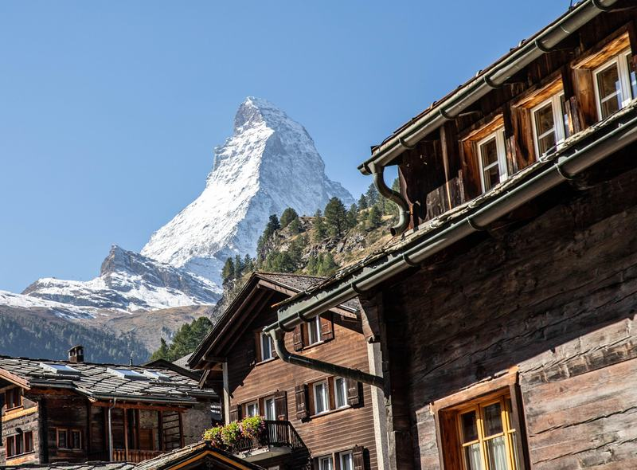
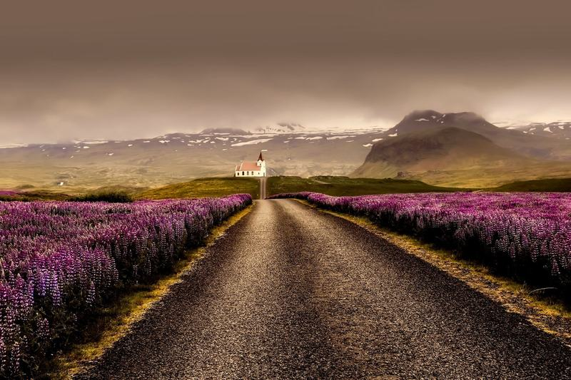

Playa
Playa
Grecia · Europa
Santorini
Cúpulas azules, casas blancas y atardeceres dorados sobre el mar Egeo.
Mejor época: may–oct

Filtra por playa, naturaleza, cultura o aventura, revisa la mejor época y guarda tus favoritos.
Playa
Grecia · Europa
Cúpulas azules, casas blancas y atardeceres dorados sobre el mar Egeo.
Mejor época: may–oct
 Playa
Playa
México · América
Arena blanca, palmeras y agua turquesa junto a ruinas mayas.
Mejor época: nov–abr

NaturalezaSuiza · Europa
Picos nevados, pueblos de madera y trenes panorámicos.
Mejor época: jun–sep

NaturalezaIslandia · Europa
Campos de lupinos, iglesias solitarias y playas de arena negra.
Mejor época: jun–ago
 Cultura
Cultura
Japón · Asia
Calles tradicionales, faroles y templos que guardan siglos de historia.
Mejor época: mar–may
 Cultura
Cultura
México · América
Callejones de colores, plazas con terrazas y mucha historia.
Mejor época: oct–mar
 Aventura
Aventura
Perú · América
La ciudadela inca suspendida entre montañas y nubes.
Mejor época: may–sep
 Aventura
Aventura
Chile · América
Picos de granito, glaciares y lagos turquesa en la Patagonia.
Mejor época: nov–mar
Estamos ampliando el atlas con recomendaciones de viajeros. Mientras tanto, revisa nuestros consejos.
Recomendaciones y preguntas frecuentes para planear sin estrés.